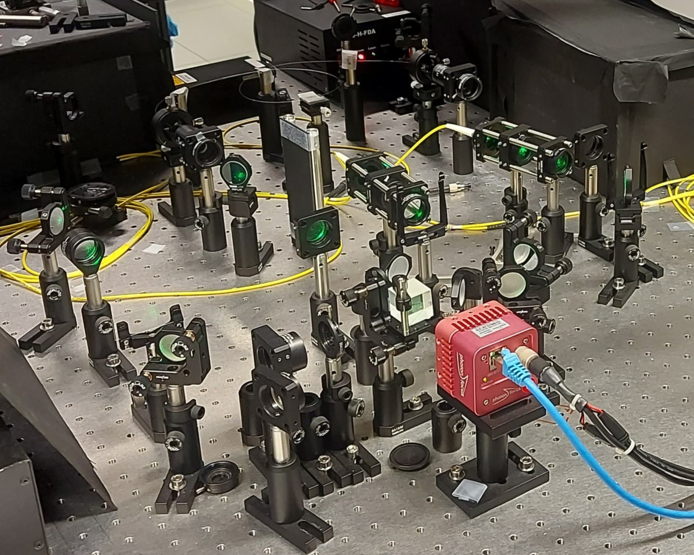
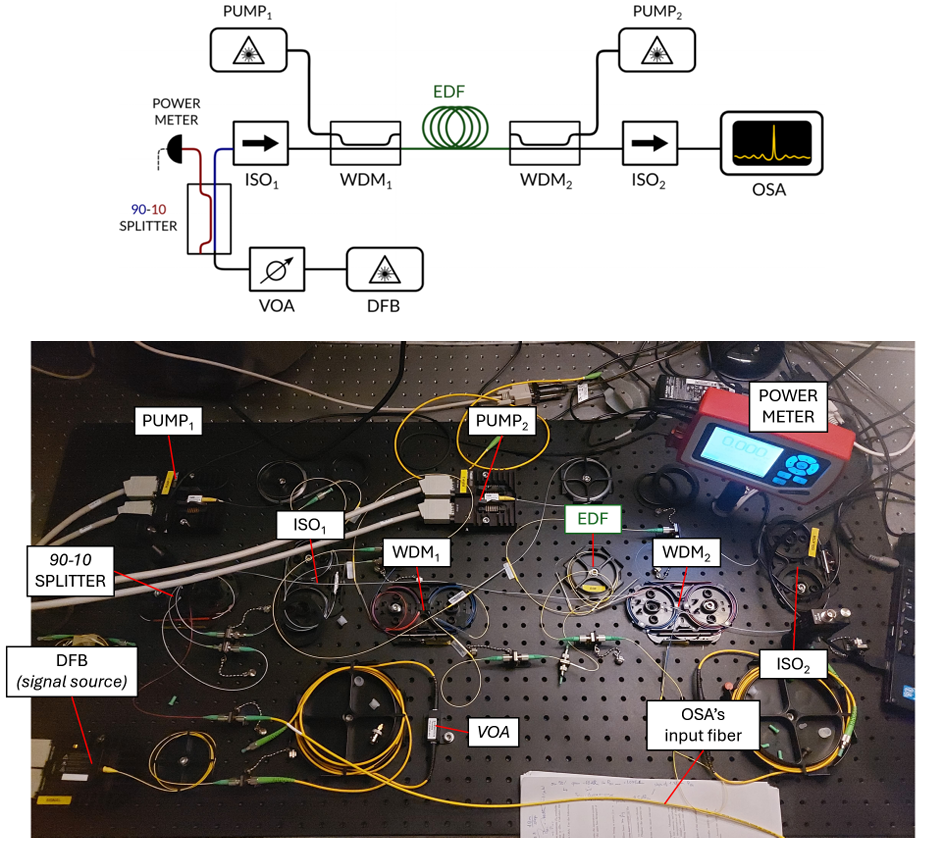
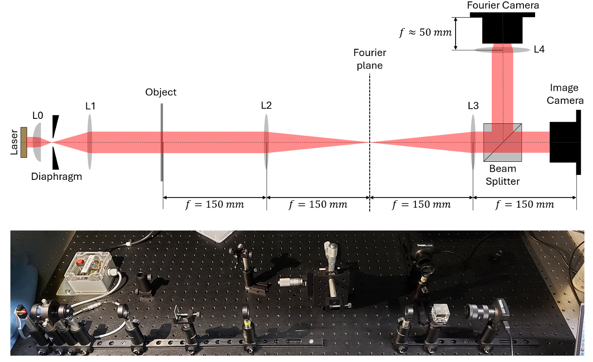
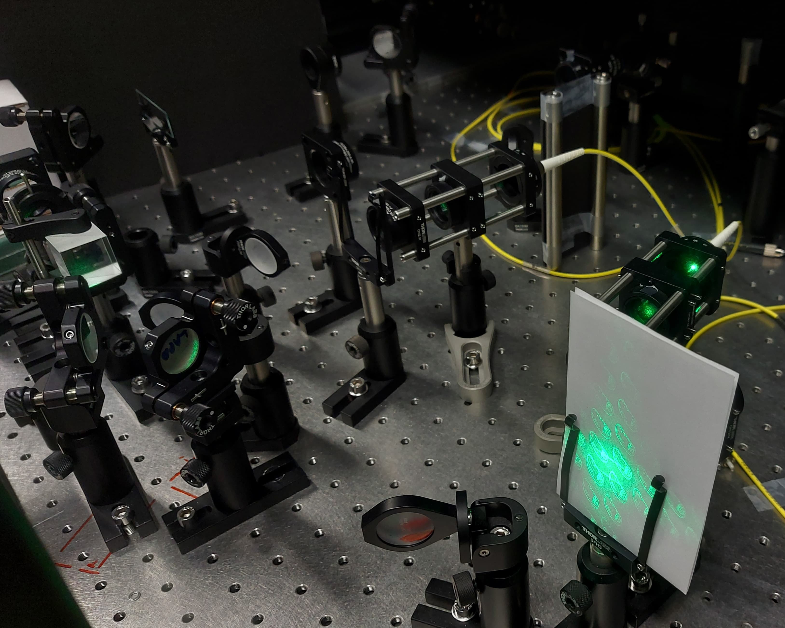
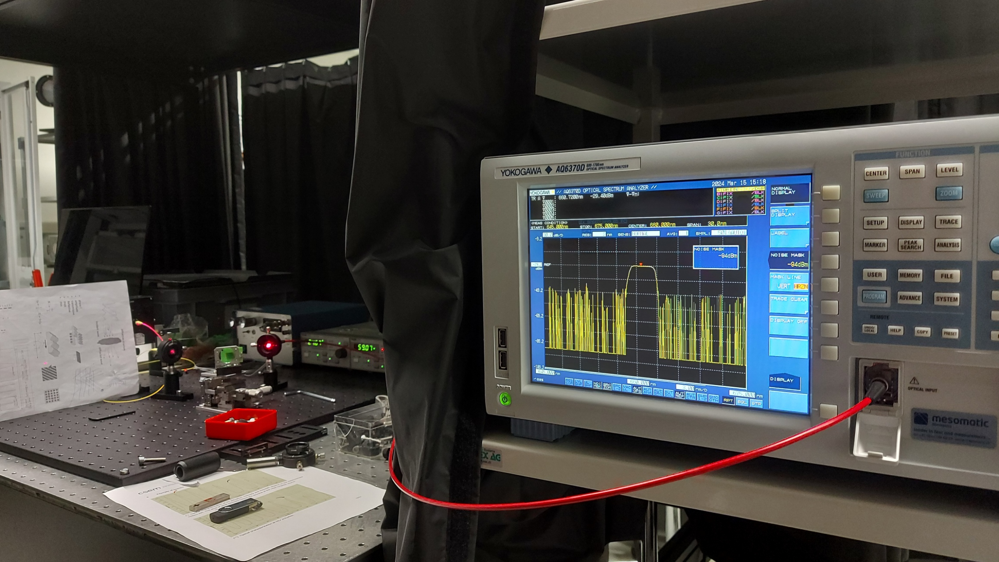

EPFL - Applied Photonics Lab
Digital Holography, Fiber Lasers, Fourier Optics, ECTLs and EDFAs
A semester long sequence exploring various laser configurations, holography, Fourier optics and optical amplification through hands-on experiments, analytical modelling, and quantitative characterization.





Context
This laboratory sequence connected the principles of physical optics to complete optical systems. Each practical combined a theoretical model with a real alignment and measurement task, making it possible to compare predictions with experimental data.
Four Projects
1. Tunable diode laser based on a MEMS grating. Characterized a tunable blazed grating and used it as both a wavelength-selective element and cavity mirror in an external-cavity tunable laser. Applying voltage changed the grating pitch and shifts the observed lasing wavelength.
2. Digital holography. Recorded off-axis interference patterns and used Fourier-domain filtering to reconstruct the amplitude and phase of an object wave. The work also used a spatial light modulator to reconstruct the recorded object field with a phase mask as well as generating custom ones using the Gerchberg-Saxton algorithm. The same project also characterized mode propagation through an MMF with the goal of image transmission with the SLM.
3. Fourier optics. Built a 4-f system to measure the two-dimensional Fourier transforms of different apertures. Analytical models were fitted to the measured patterns, and masks placed in the Fourier plane demonstrated low-pass, high-pass and band-pass spatial filtering.
4. Erbium-doped fiber amplifier. Assembled and characterized an EDFA in forward and backward pumping configurations, measuring amplified spontaneous emission, gain, saturation, conversion efficiency and noise figure with an optical spectrum analyzer. Later reused the setup and its doped fiber as the gain medium of a fiber laser.
Outcomes
- Demonstrated voltage-controlled wavelength tuning in an external-cavity laser using a MEMS blazed grating.
- Recorded digital holograms, and reconstructed them with a Spatial Light Modulator.
- Validated Fourier-transform models experimentally and implemented spatial filtering in a physical Fourier plane.
- Measured EDFA setups and built a fiber laser at telecom wavelengths.
- Developed practical experience aligning sensitive free-space systems, manipulating fibers and interpreting optical spectra.